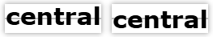
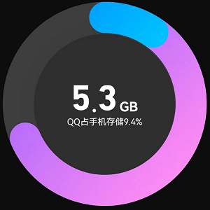

- 坐标点 x y
- 坐标点
- 偏移 dx dy
- 偏移 shift
- 半径 r
- 圆的半径 radius for <circle>
- 圆角半径 rx ry
- xy轴上的圆角半径 radius；适用于 <ellipse> <rect>
- 水平对齐 text anchor
-
文本相对于中心点 - relative to a given point 的对齐方式；默认start
text-anchor: start | middle | end
- 绘制 d
-
绘制路径
每一个命令都用一个关键字母来表示
大写字母，表示采用绝对定位；另一种是用小写字母，表示采用相对定位
6类总共20个命令 - 6 types of path commands, for a total of 20 commands
基本命令
| 分类 |
说明 |
| M |
移动 |
| L |
绘制线 |
| H |
简写命令；绘制水平线 |
| V |
简写命令；绘制垂直线 |
| A |
曲线 |
| C |
贝塞尔曲线；至少3个点 |
| Q |
quadratic Bézier curve 二次贝塞尔曲线
两组坐标 x1 y1 x y 分别是控制点和终点，控制点的作用是确定起点和终点的曲线斜率 |
| Z |
闭合路径 |
-
以下属性建议使用CSS代替
CSS的优先级高于元素的属性
- 垂直对齐 dominant-baseline
-
文本相对于基线的垂直对齐方式
文本基线 baseline：文本的底部边缘所在的水平线
middle：将文本的中部对齐到指定的基线位置。适用于将文本的中部与某个容器或行的中部对齐
central：将文本的中心对齐到指定的基线位置。适用于将文本整体居中于容器或行的高度内
dominant-baseline: auto | hanging | ideographic | alphabetic | middle | central

middle vs central
对英文字体有影响
- 中心点坐标 cx cy
- 中心点坐标 - center point，如 <circle> <eclipse>
- 笔刷 stroke
-
stroke：定义SVG元素的轮廓 outline 颜色
stroke-opacity：透明度
stroke-width：宽度
stroke-dashoffset：笔刷起点绘制偏移；
stroke-dasharray：笔刷点划线段大小分配/占空比：实线段、空线段；1个参数时，表示50%；当占空比发送变化时，可以利用这个特性，可以制作描边、加载等特效
stroke-dasharray：length | percentage
stroke-linecap：笔刷端点类型，子弹形、圆形、方形
stroke-linecap：butt | round | square;
fill：颜色填充；默认黑色；如果不需要，请显式指定为none
fill-opacity：透明填充
- 填充 fill
-
默认是黑色 black
如不需要，可以设为none或transparent
- 颜色 color
-
定义间接 potential indirect value 的颜色，用于笔刷 stroke 和 填充 fill
不能直接用于SVG元素 - no direct effect on SVG elements
- 字体 font
-
不支持复合属性，需要单独设置
font-family
font-size
font-weight
-
参考画布样式
.svg-basic {
width: 300px;
height: 300px;
margin: 1rem auto;
background-color: #ff0;
}
- 圆 <circle>
-
圆点 cx、cy； 默认左上角(0, 0)
半径 r
<svg class="svg-basic">
<circle cx=150 cy=150 r="150" fill="#f40"></circle>
</svg>
- 椭圆 <ellipse>
-
位置：cx、cy；
圆角：x、y方向上的圆角 rx、ry
<svg class="svg-basic">
<ellipse cx=150 cy=150 rx="100" ry="80" fill="#f40"></ellipse>
</svg>
- 矩形 <rect>
-
位置：x、y
宽高：width、height
圆角：x、y方向上的圆角 rx、ry
<svg class="svg-basic">
<rect x=40 y=40 width=220 height=220 rx=0 ry=0 fill=#f40></rect>
</svg>
- 线 <line>
-
起点：(x1,y1)
终点：(x2,y2)
配合stroke-dasharray和stroke-dashoffset绘制更丰富的线条
stroke、stroke-width可以使用CSS指定
必须指定stroke，否则线条不可见
<svg class="svg-basic">
<line class="svg-line" x1=0 y1=0 x2=300 y2=300></line>
</svg>
.svg-line {
stroke: #f40;
stroke-width: 2px;
}
[] 点划线：改变数字，查看点划线起点的偏移情况
.svg-line-dash {
stroke: #f40;
stroke-width: 4px;
stroke-dasharray: 10 20;
stroke-dashoffset: 0;
}
stroke-dashoffset:
[] 加载器/进度条：stroke-dasharray的占空比从开始到较大的值
#loader-circle {
fill: transparent;
stroke: #f40;
stroke-width: 2px;
stroke-dasharray: 0 1000;
animation: alternate loader 5s linear forwards;
}
@keyframes loader {
to {
stroke-dasharray: 1000;
}
}
- 多边形 <polygon>
-
利用点的集合points和笔触颜色stroke和宽度stroke-width或填充fill绘制
填充fill默认黑色；如不需要，可以设置为none
<svg class="svg-basic">
<polygon class="svg-polygon" points="0,0 50,50 50,100"></polygon>
</svg>
.svg-polygon {
stroke: #f40;
stroke-width: 2px;
fill: none;
}
- 文本 <text>
-
SVG 允许您像图形一样修改文本并应用渐变、图案、剪切路径、蒙版或过滤器
默认情况下，text使用以下默认属性：颜色：黑色；字体大小：16px；不换行
x y：基线的起点 - the starting point of the text baseline；设置文本的起点
dx dy：用于指定每个字符或子字符串<tspan>相对于其父元素的额外偏移量，用来微调文本的位置，特别是在处理多行文本或特定字符的对齐时非常有用
结合水平对齐属性 text-anchor和垂直对齐属性 dominant-baseline，更加精准控制文本
- SVG尺寸：300*60
-
<text>遇见最好的自己</text>
<text x="16" y="16">遇见最好的自己</text>
<text x="16" y="16" text-anchor="end">遇见最好的自己</text>
<text x="16" y="16" text-anchor="middle">遇见最好的自己</text>
<text x="150" y="30" dominant-baseline="middle">遇见最好的自己</text>
<text x="150" y="30" dominant-baseline="central">遇见最好的自己</text>
<text x="150" y="30"
text-anchor="middle"
dominant-baseline="central">遇见最好的自己</text>
<text x="150" y="30"
text-anchor="middle"
dominant-baseline="middle">遇见最好的自己</text>
<text x="150" y="30"
text-anchor="middle"
dominant-baseline="middle">遇见最好的自己</text>
- 子文本 <tspan>
-
<text>的子文本 subtext，便于精准控制
-
<text dx="16">默认00开始；偏移了16</text>
<text x="16" y="16" dx="16">多偏移了16</text>
<text x="16" y="16">
<tspan>hi,</tspan>
<tspan>glpla；无偏移</tspan>
</text>
<text x="16" y="16">
<tspan>hi,</tspan>
<tspan dx="16" dy="16">glpla；相对父元素偏移</tspan>
</text>
<svg class="svg-basic txt">
<text x="150" y="30" dominant-baseline="middle" text-anchor="middle">
<tspan>hi,</tspan>
<tspan font-size="18">glpla</tspan>
<tspan font-size="20">小字体</tspan>
<tspan font-size="24">大字体</tspan>
</text>
</svg>
<svg class="svg-basic txt">
<text x="150" y="30" dominant-baseline="central" text-anchor="middle">
<tspan>hi,</tspan>
<tspan font-size="18">glpla</tspan>
<tspan font-size="20">小字体</tspan>
<tspan font-size="24">大字体</tspan>
</text>
</svg>
- 路径 <path>
-
. SVG 基本形状中最强大的一个。通用绘图工具 - generic element to define a shape；可以创建线条、曲线、弧形等基本图形 - the basic shapes
. path 元素的形状是通过属性 d 定义的，属性 d 的值是一个“命令 + 参数”的序列
- [] 流程图
- 矩形 <rect>、文字 <text>、对齐
- [] 静态描边文字
-
. SVG容器为320*120，定位点为160*60；当水平居中middle垂直居中central时，文字位于容器正中间
. 在画布外，增加一个<div>放置背景图片
. 给text增加文字阴影[2重]
<svg class="svg-txt">
<text class="title-static" x="160" y="60" text-anchor="middle" dominant-baseline="central">遇见最好的自己</text>
</svg>
.svg-txt {
width: 320px;
height: 120px;
margin: 0 auto;
}
.title-static {
height: 120px;
line-height: 120px;
font-size: 40px;
font-family: 'yuwei';
text-shadow: 0 0 10px #ff0, 0 0 10px #ff0;
fill: none;
stroke: #fff;
stroke-width: 1;
}
- [] 动态描边文字
-
. 借助
帧动画，改变stroke-dashoffset实现动态描边
<svg class="svg-txt">
<text class="title" x="160" y="60" text-anchor="middle" dominant-baseline="central">路在前方人在路上</text>
</svg>
.svg-txt {
width: 320px;
height: 120px;
margin: 0 auto;
}
.title {
height: 60px;
line-height: 60px;
font-size: 40px;
font-family: 'yuwei';
text-shadow: 0 0 10px #ff0, 0 0 10px #ff0;
fill: none;
stroke: #fff;
stroke-width: 1;
stroke-dasharray: 10 1000;
stroke-dashoffset: 10;
animation: draw 5s ease-in-out infinite;
}
@keyframes draw {
100% {
stroke-dasharray: 800;
stroke-dashoffset: 0;
}
}
- [] 手机清理空间效果图
- 
- 设计思路
-
绘制一个fill为黑灰色、带轮廓stroke的圆circle
再绘制一个无填充、有轮廓stroke颜色和宽度，并指定一定占空比的同心圆
再绘制一个无填充、有轮廓stroke颜色和宽度、更大占空比的同心圆，并指定偏移offset
添加3个text，以中心为参考，分别是水平end对齐、水平start对齐和垂直hanging对齐
微调text坐标完成设计
<svg class="svg-demo">
<circle class="inner" cx=150 cy=150 r="130"></circle>
<circle class="middle" cx=150 cy=150 r="130"></circle>
<circle class="outer" cx=150 cy=150 r="130"></circle>
<text class="txt1" x="150" y="150" text-anchor="end">5.3</text>
<text class="txt2" x="160" y="150">GB</text>
<text class="txt3" x="150" y="160" text-anchor="middle" dominant-baseline="hanging">QQ占手机存储9.4%</text>
</svg>
.svg-demo {
width: 300px;
height: 300px;
margin: 2rem auto;
}
.svg-demo .inner {
fill: #2f2f2f;
stroke: #3d3d3d;
stroke-width: 40px;
}
.svg-demo .middle {
fill: none;
stroke: #f489f3;
stroke-width: 40px;
stroke-dasharray: 360 250;
stroke-linecap: round;
}
.svg-demo .outer {
fill: none;
stroke: #01b3fd;
stroke-width: 40px;
stroke-dasharray: 100 700;
stroke-dashoffset: 990;
stroke-linecap: round;
}
.txt1 {
font-size: 40px;
font-weight: 600;
fill: #ffffff;
}
.txt2 {
font-size: 20px;
font-weight: 600;
fill: #ffffff;
}
.txt3 {
font-size: 14px;
fill: #ffffff;
}
- [] 绘制弧线
-
A rx ry x-axis-rotation large-arc-flag sweep-flag x y
rx：轴半径
ry：轴半径
弧形的旋转角度：x-axis-rotation
large-arc-flag：决定弧线是大于还是小于 180 度，0 表示小角度弧，1 表示大角度弧
sweep-flag：表示弧线的方向，0 表示从起点到终点沿逆时针画弧，1 表示从起点到终点沿顺时针画弧
sweep-flag：弧线方向
x y：弧形的终点
<svg width="400" height="200">
<path d="M 0 -200 A 3 1 0 1 0 400 0 V 200 A 3 1 0 1 0 0 300 Z" fill="#f40" />
</svg>
- [] 使用SVG模拟时钟
- [] 验证码